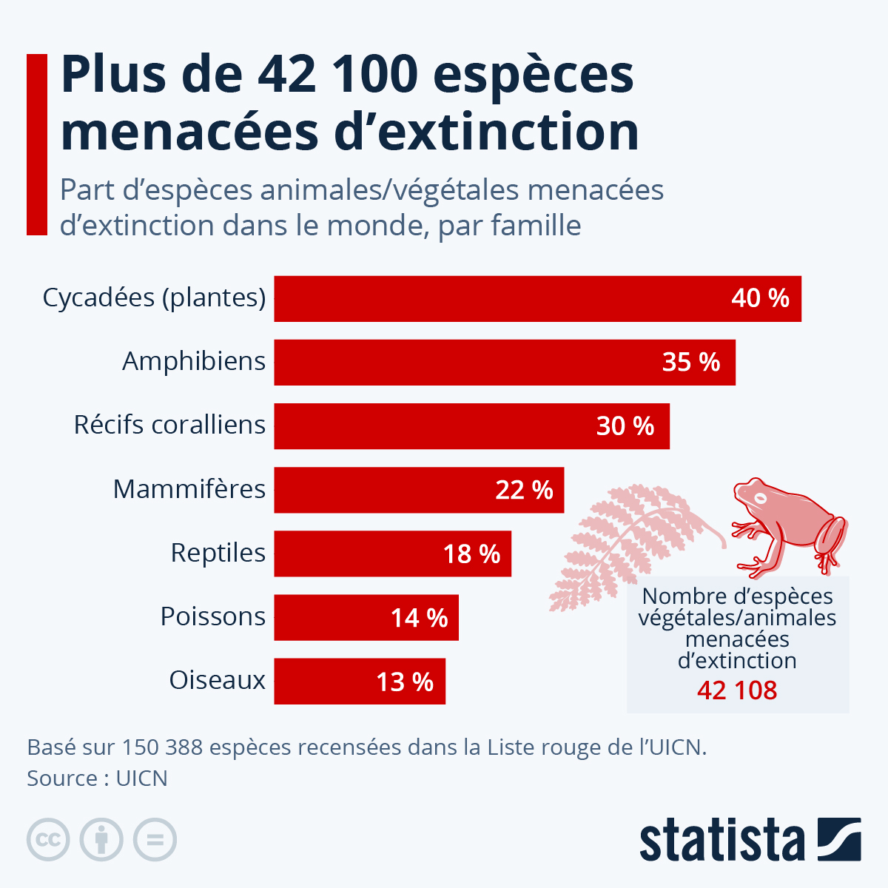

Les espèces menacées
Bienvenue sur le site qui vous présentera les différentes espèces menacées de disparition dans le monde
En ce moment dans le monde, il se trouve 45 321 espèces classées comme menacées, elles sont pour la plupart des amphibiens. Ces espèces sont en danger surtout à cause de l'impact des êtres humains (pollution, montée des eaux, asséchement, acidité des océans, etc.). Ce site vous présente quelques unes des ces espèces.

En tous cas, voici des actions que vous pouvez effectuer dans votre quotidien afin de réduire la menace de ces espèces en danger:
- Réduire, réutiliser et recycler : Minimisez vos déchets pour réduire la pollution de l'environnement, ce qui aide à préserver les habitats naturels.
- Participer à des actions locales : Rejoignez des groupes de conservation locaux ou des projets de nettoyage communautaire pour aider à protéger les habitats naturels.
- Supporter des produits durables : Achetez des produits certifiés écologiques et évitez ceux qui contribuent à la déforestation ou à la destruction des habitats>
- Éduquer et sensibiliser : Informez votre entourage sur les espèces menacées et les actions que chacun peut entreprendre pour les protéger.
- Limiter l'utilisation de pesticides et produits chimiques : Utilisez des alternatives naturelles pour protéger la biodiversité dans votre jardin ou votre espace vert.
La WWF est une organisation qui protège les animaux en voie de diparition.
Cliquez ici pour visiter le site de la WWF!